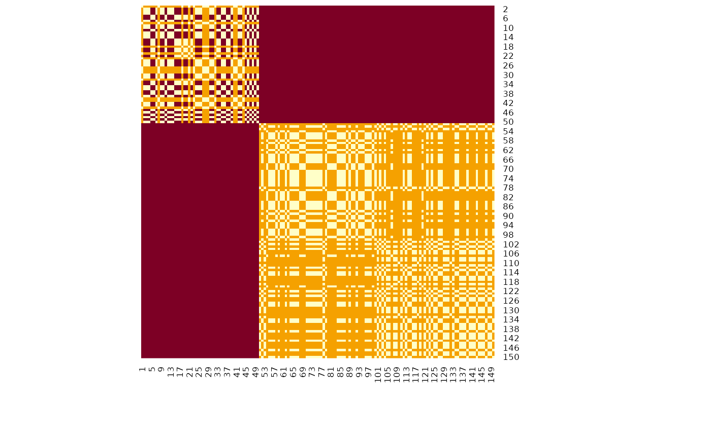
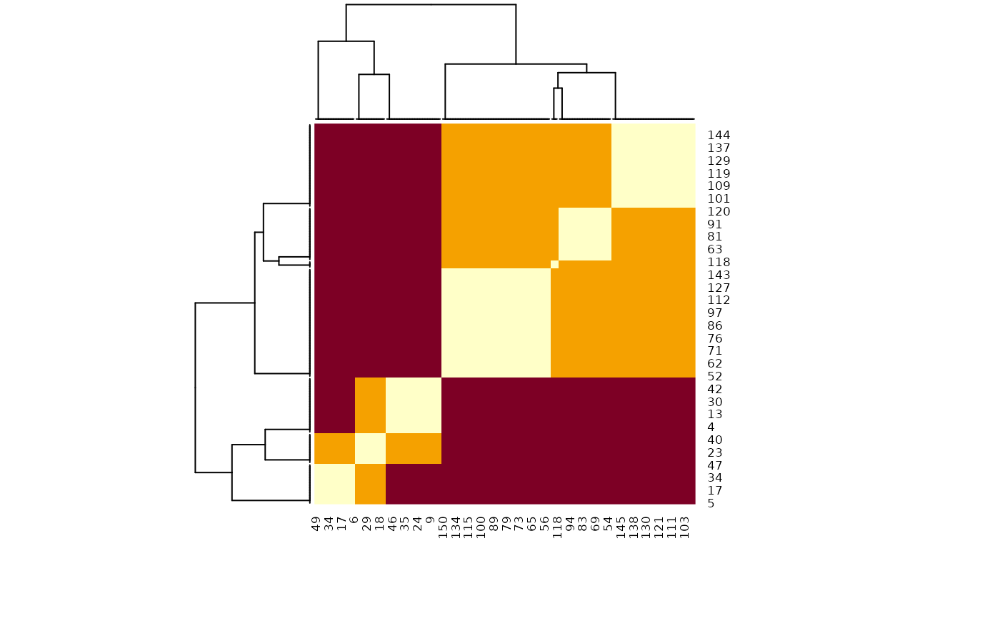
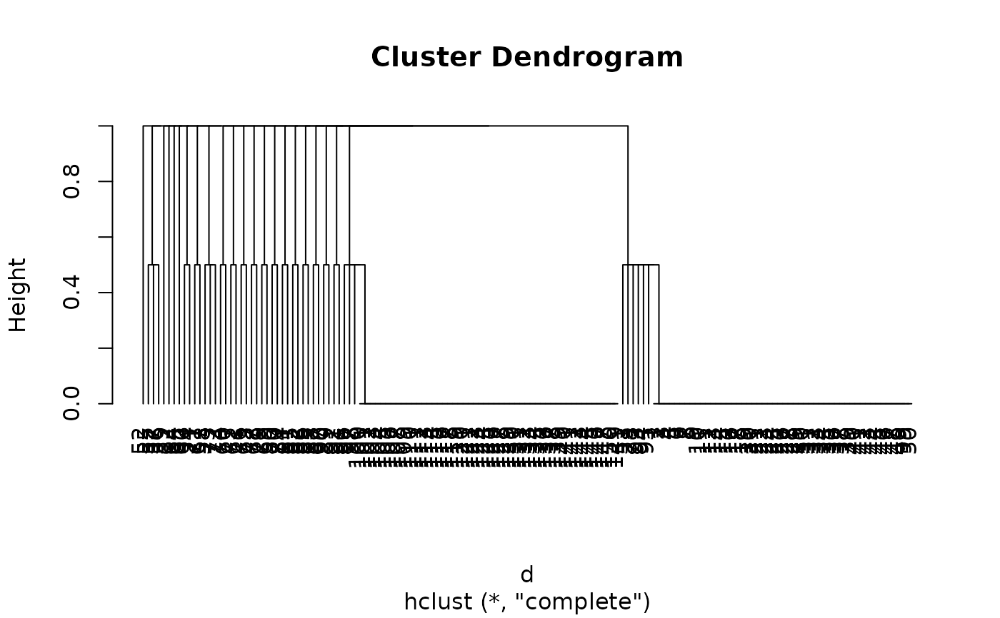

One of the core "issue" of statistical clustering is that, in many cases, different methods will give different results. The metaclustering approach proposed by easystats (that finds echoes in consensus clustering; see Monti et al., 2003) consists of treating the unique clustering solutions as a ensemble, from which we can derive a probability matrix. This matrix contains, for each pair of observations, the probability of being in the same cluster. For instance, if the 6th and the 9th row of a dataframe has been assigned to a similar cluster by 5 our of 10 clustering methods, then its probability of being grouped together is 0.5.
Value
A matrix containing all the pairwise (between each observation) probabilities of being clustered together by the methods.
Details
Metaclustering is based on the hypothesis that, as each clustering algorithm embodies a different prism by which it sees the data, running an infinite amount of algorithms would result in the emergence of the "true" clusters. As the number of algorithms and parameters is finite, the probabilistic perspective is a useful proxy. This method is interesting where there is no obvious reasons to prefer one over another clustering method, as well as to investigate how robust some clusters are under different algorithms.
This metaclustering probability matrix can be transformed into a dissimilarity
matrix (such as the one produced by dist()) and submitted for instance to
hierarchical clustering (hclust()). See the example below.
Examples
# \donttest{
data <- iris[1:4]
rez1 <- cluster_analysis(data, n = 2, method = "kmeans")
rez2 <- cluster_analysis(data, n = 3, method = "kmeans")
rez3 <- cluster_analysis(data, n = 6, method = "kmeans")
list_of_clusters <- list(rez1, rez2, rez3)
m <- cluster_meta(list_of_clusters)
# Visualize matrix without reordering
heatmap(m, Rowv = NA, Colv = NA, scale = "none") # Without reordering

# Reordered heatmap
heatmap(m, scale = "none")

# Extract 3 clusters
predict(m, n = 3)
#> 150 149 148 147 146 145 144 143 142 141 140 139 138 137 136 135 134 133 132 131
#> 1 1 1 1 1 1 1 1 1 1 1 1 1 1 1 1 1 1 1 1
#> 130 129 128 127 126 125 124 123 122 121 120 119 118 117 116 115 114 113 112 111
#> 1 1 1 1 1 1 1 1 1 1 1 1 1 1 1 1 1 1 1 1
#> 110 109 108 107 106 105 104 103 102 101 100 99 98 97 96 95 94 93 92 91
#> 1 1 1 1 1 1 1 1 1 1 1 1 1 1 1 1 1 1 1 1
#> 90 89 88 87 86 85 84 83 82 81 80 79 78 77 76 75 74 73 72 71
#> 1 1 1 1 1 1 1 1 1 1 1 1 1 1 1 1 1 1 1 1
#> 70 69 68 67 66 65 64 63 62 61 60 59 58 57 56 55 54 53 52 51
#> 1 1 1 1 1 1 1 1 1 1 1 1 2 1 1 1 3 1 1 1
#> 50 49 48 47 46 45 44 43 42 41 40 39 38 37 36 35 34 33 32 31
#> 1 1 1 1 1 1 1 1 1 1 1 1 1 1 1 1 1 1 1 1
#> 30 29 28 27 26 25 24 23 22 21 20 19 18 17 16 15 14 13 12 11
#> 1 1 1 1 1 1 1 1 1 1 1 1 1 1 1 1 1 1 1 1
#> 10 9 8 7 6 5 4 3 2 1
#> 1 1 1 1 1 1 1 1 1 1
# Convert to dissimilarity
d <- as.dist(abs(m - 1))
model <- hclust(d)
plot(model, hang = -1)

# }